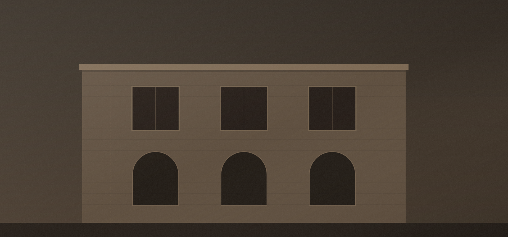
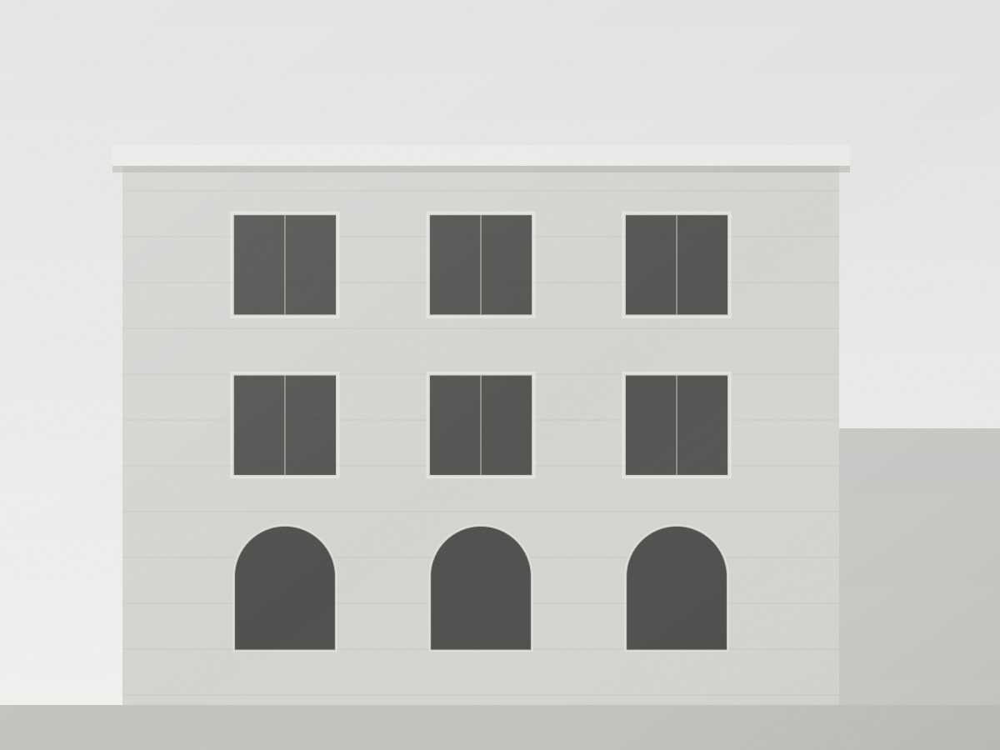

/ 04 — Projeler
Proje arşivi
Tarihi yapı restorasyonundan kazı alanı belgelemesine, mimari projeden görselleştirmeye — ofisin yürüttüğü işler.
Yukarıdaki liste ofisin kendi yürüttüğü işleri kapsar. Önceki kurumlar bünyesinde yer alınan projeler için referanslar bölümüne bakabilirsiniz.
İletişim
Sıradaki proje sizinki olsun
Yapınızın durumunu aktarın; kapsamı ve yol haritasını birlikte netleştirelim.
